Preparing Molecules for DOCKing
Author: P. Therese Lang
Last updated July 31, 2018 by Scott Brozell
This tutorial describes the steps required to prepare receptor and ligand molecules as inputs for DOCK calculations that predict orientations of a ligand in a receptor active site. We study the AraC regulatory protein in the form of the complex L-Arabinose-Binding Protein bound to L-Arabinose (PDB ID 1ABE ) as an example system. However, these techniques should be transferable to any protein-ligand system.
This tutorial uses the program Chimera (Snapshot Release 1.2309), which can be downloaded from the UCSF Computer Graphics Lab at http://www.cgl.ucsf.edu/chimera. Chimera is freely available to academics and relatively simple for novice users to learn. However, a variety of other packaged programs and script libraries are available to perform these types of modifications to the structure files (see DOCK Related Links for more information).
For a receptor, an overview of the general procedure is to visualize the source file of the target, to remove extraneous atoms, such as alternate conformations, ligands, ions, solvent molecules, cofactors, etc., to add missing atoms, such as, hydrogens, incomplete side chains, etc., to assign atom types and partial charges, to create a final mol2 file, and to create a final pdb file without hydrogens. During all these steps, one should keep in mind one's scientific model. For assigning atom types and partial charges, Dock uses Sybyl atom type labels but Amber force field parameters. For a ligand, the general procedure is simpler but similar.
STEP 0: Examine the pdb file.
A basic step in any docking project is selecting the file that will be used for the structure of the target. We shall use 1ABE.pdb. A visualization of this file can be seen below:
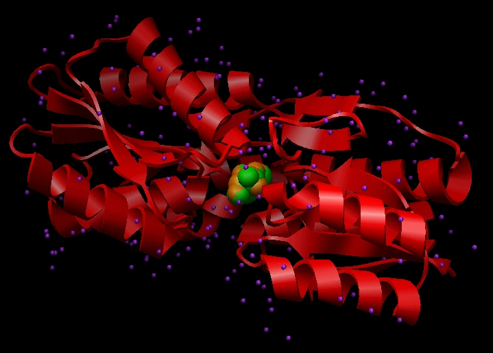
Image generated using Chimera (http://www.cgl.ucsf.edu/chimera)
This file contains Cartesian coordinates for the L-arabinose-binding protein (red ribbon), crystallographic waters (purple), and two conformations of the ligand L-arabinose (green and orange). Each of these components must be dealt with during preparation for DOCKing.
STEP 1: Prepare the receptor file.
1a) Open the 1ABE.pdb file in Chimera
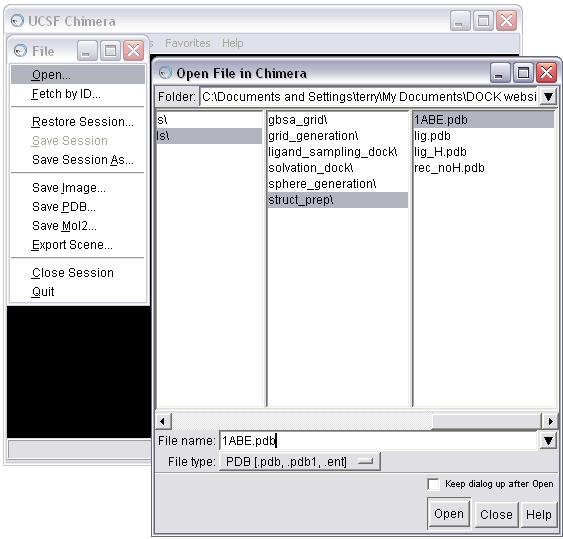
1b) Select and delete the ligands (L-arabinose) from the complex
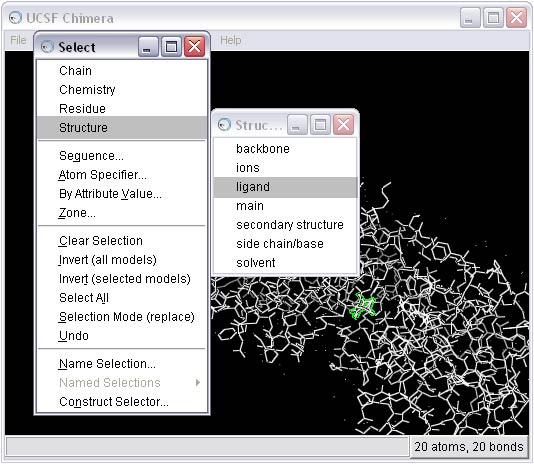
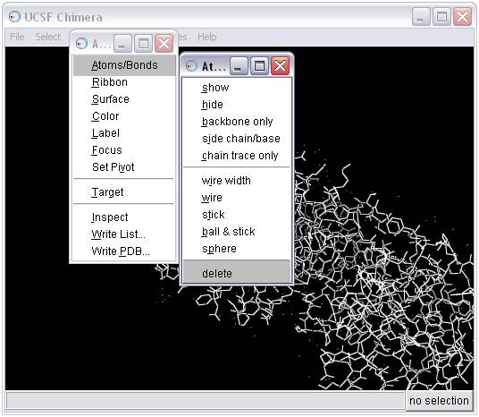
1c) Use the Dock Prep tool to complete the receptor preparation. For more information on the Dock Prep module, see the Chimera documentation. Note that recent versions of Chimera provide additional features compared with those in the screen shot below. In particular, 'Mutate residues with incomplete side chains to ALA (if CB present) or GLY' is a popular feature. The screen shots will be updated soon.
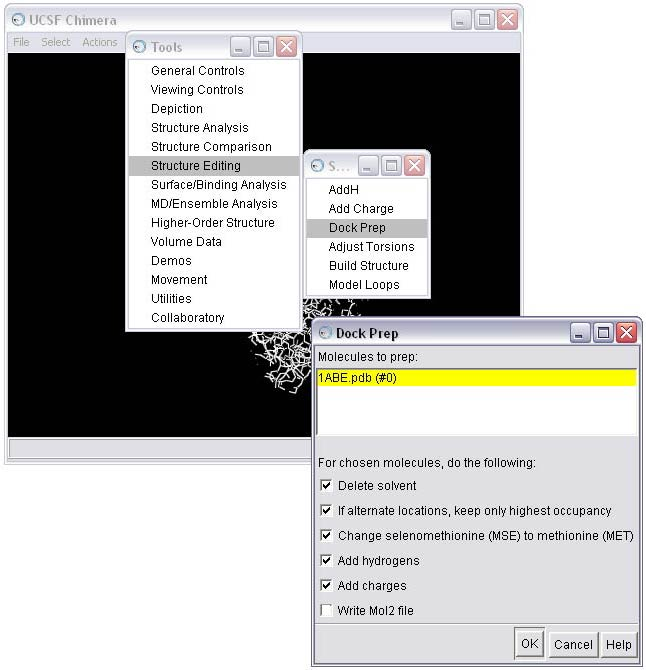
1d) Select the method for adding hydrogens; in this case we will allow the hydrogen to be optimized by the hydrogen bonding network, and we will allow the method to determine the protonation state
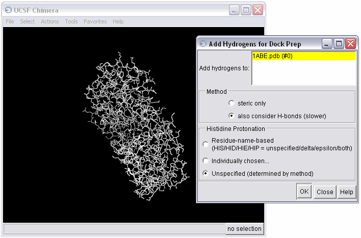
1e) Examine warnings from the Dock Prep procedure
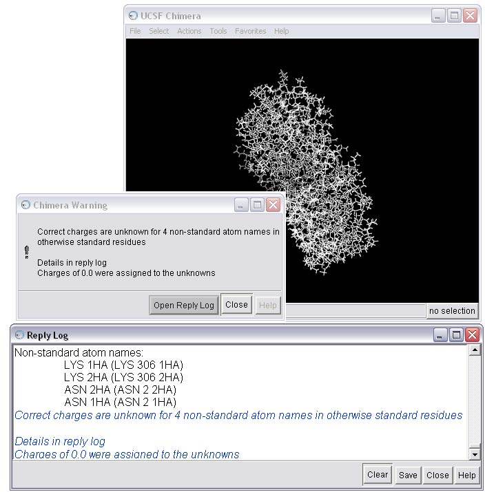
1f) Resolve issues that are causing warnings in the Dock Prep procedure
As you can see, there are a few warnings about non-standard atoms for this receptor. You can use Chimera to take a closer look at the problem residues using the Command Line.
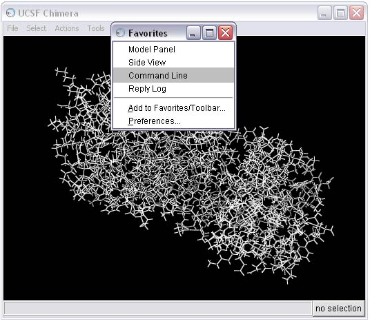
This action will open the Command Line interface. Type the following commands into the command line to isolate the first residue in the warning--LYS 306.
~display
display :306
focus
color byelement
linewidth 3
rlabelThis series of commands will 1) undisplay the entire receptor, 2) display residue 306 only, 3) refocus the screen on residue 306, 4) color the atoms based on element, 5) increase the size of the bonds for easier viewing, and 6) label the residue. For more information on other Command Line options, see the Chimera documentation for the Basic Function: Commands.
It should now be obvious that there is a problem with this lysine residue as compared to a normal lysine--LYS 300.
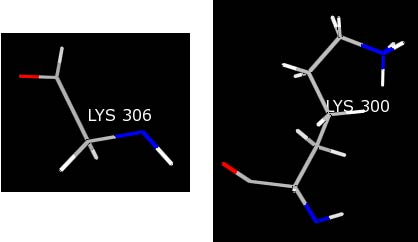
Most likely, the crystallographer knew the terminal residue was a LYS, but did not see any electron density for the LYS 306 side chain. As a result, only the backbone was built into the structure. Because Chimera is being told this residue is a LYS, the charges for the LYS template are being loaded resulting in non-integral charges for the residue and causing the warning message.
The best way to fix this situation is to mutate the incomplete LYS residue to a GLY residue. GLY residues have the appropriate number of atoms, which will result in an integral set of charges for the residue, and the structure will still comply with the experimental data. To mutate the LYS residue, type the following command into the Command Line:
swapaa gly :306
This command will change the LYS 306 to a GLY in the same orientation.
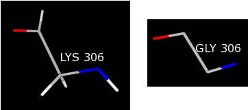
You need to repeat this procedure for the ASN 2 residue, which is the source of the remaining warnings.
swapaa gly :2
1g) Save the receptor in mol2 format
Once all the warnings have been resolved, the receptor can be saved in mol2 format. The Dock Prep procedure should be run again to incorporate the mutated residues (see STEP 1c). Make sure the Write Mol2 box is checked at this point. The final molecule can then be written to file, in this case as rec_charged.mol2.
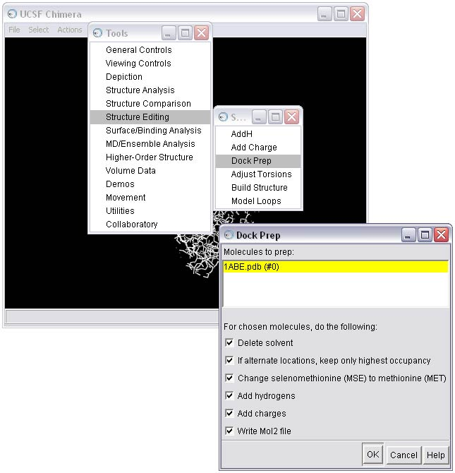
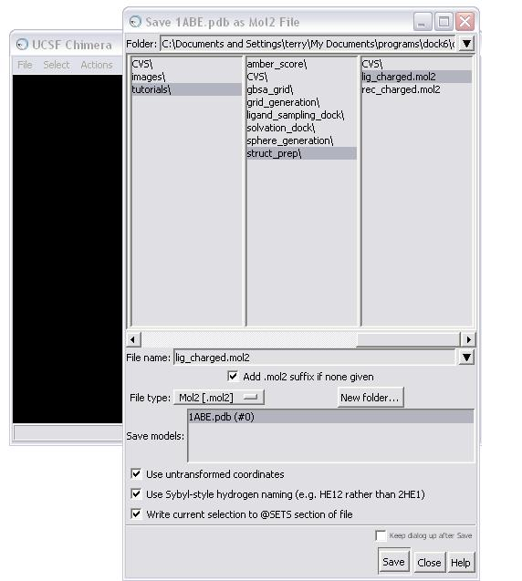
NOTE: When saving, make sure all the boxes in the Save As dialog box are checked!
1h) Strip hydrogens from the mutated receptor and save in pdb format (this step is necessary for molecular surface generation in the Sphere Generation and Selection Tutorial)
To perform this step, first select all the hydrogens from the molecule and then delete them.
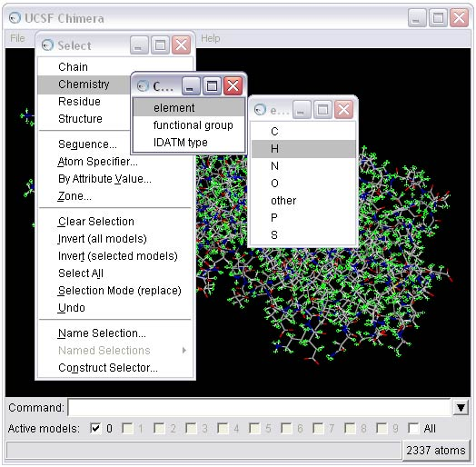
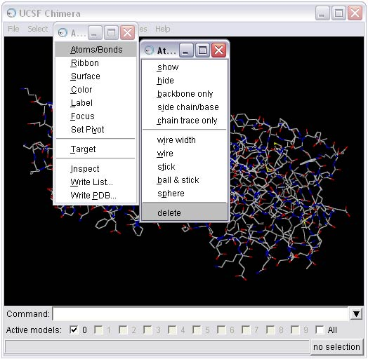
The receptor should now be saved in pdb format: rec_noH.pdb.
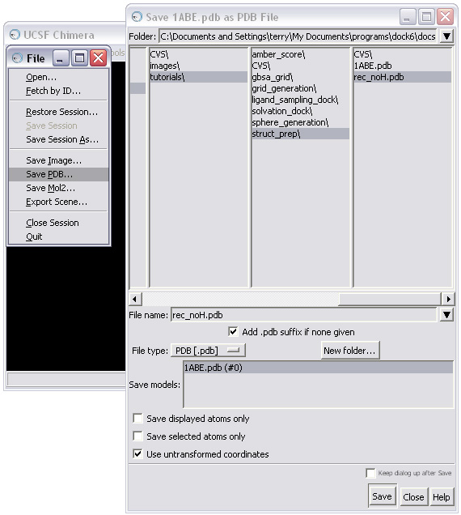
NOTE: When saving, make sure the "Use untransformed coordinates " box is checked in the Save As dialog box!
STEP 2: Prepare the ligand file.
We will only prepare the L-arabinose A conformation in the pdb file for simplicity. Selection of the conformation A over the conformation B was arbitrary.
2a) Open the 1ABE.pdb file in Chimera
2b) Select and delete everything BUT the ligand from the complex
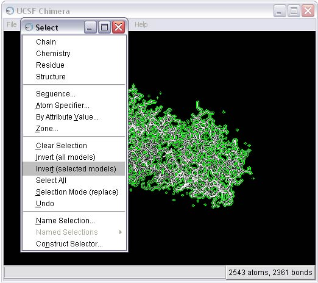
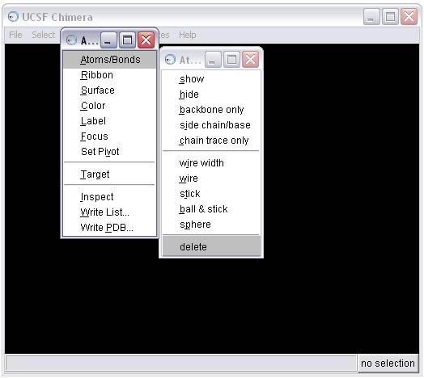
2c) Remove the B conformation of the ligand
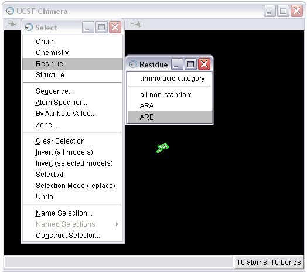
2d) Make the molecule easier to see; use these Command Line (see STEP 1f) commands or hunt and peck to perform the equivalent with the mouse
focus
color byelement
linewidth 32e) Add hydrogens
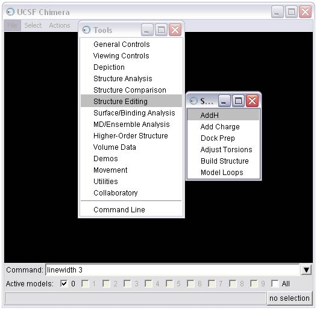
2f) At this point, we recommend one of two options for completing preparing the ligand depending on your needs and application:
OPTION 1: Calculate charges using the Chimera Add Charge tool.
The Add Charge tool is a call to the antechamber program. Antechamber is a set of auxiliary programs for molecular mechanic (MM) studies. This software package addresses the following issues in MM calculations:
(1) recognizing the atom type
(2) recognizing the bond type
(3) judging the atomic equivalence
(4) generating the residue topology file
(5) finding missing force field parameters and supplying reasonable and similar substitutesAntechamber can generate input automatically for most organic molecules in a database.
(A) To complete this option, first activate the Add Charge tool
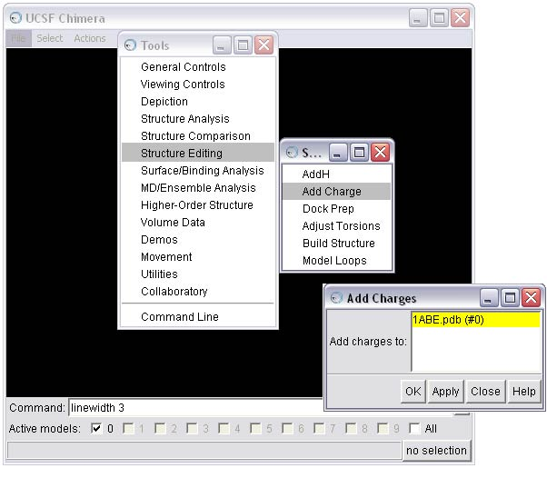
(B) To seed the charge calculation, Chimera needs the formal charge of the molecule. Chimera will estimate the value based on the atom types and bonding. Here, Chimera has estimated accurately, so we will calculate AM1BCC charges.
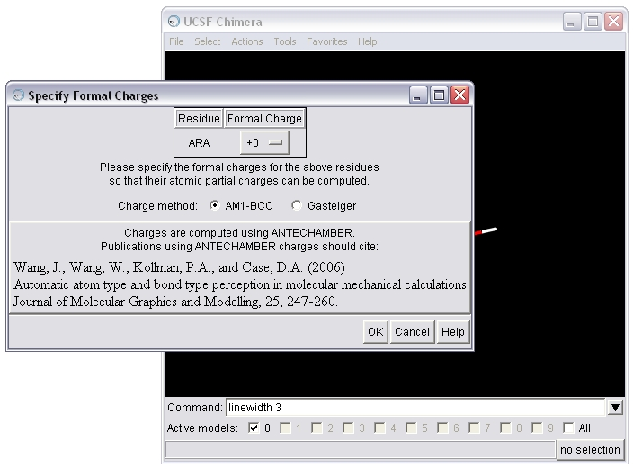
(C) Save the molecule in mol2 format
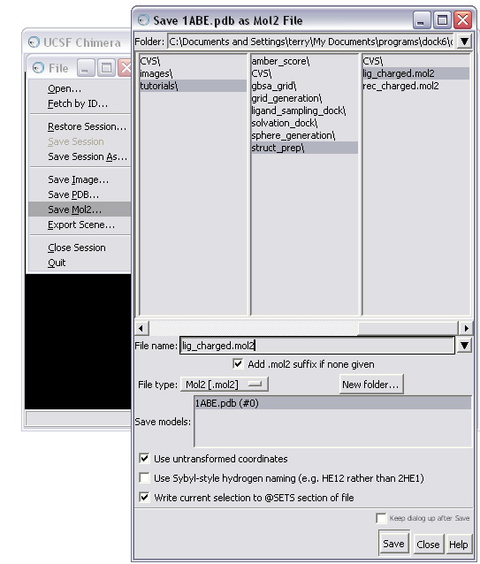
OPTION 2: Prepare your ligand(s) using the ZINC database.
ZINC is a free database of commercially-available compounds for virtual screening. It contains over 35 million compounds in ready-to-dock, 3D formats (Irwin, Sterling, Mysinger, Bolstad and Coleman, J. Chem. Inf. Model. 2012. DOI: 10.1021/ci3001277). We recommend this procedure if you have a large library of ligands to prepare or if you would like a protonation state or conformation expansion. If you utilize this option, be sure to save your ligand preparation work from the previous parts of STEP 2: save the ligand in Tripos mol2 format (see part C of OPTION 1 of STEP 2f above). The ZINC web site is zinc15.docking.org.